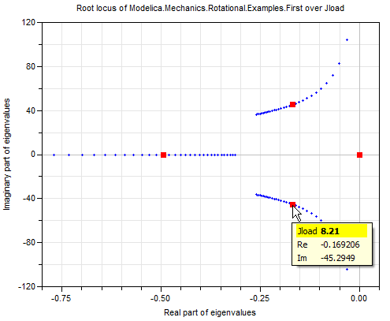

Package of examples to demonstrate the usage of plot functions
This package contains example function calls to demonstrate the usage of the plot functions in package Modelica_LinearSystems2.Utilities.Plot.
Extends from Modelica.Icons.ExamplesPackage (Icon for packages containing runnable examples).
| Name | Description |
|---|---|
| Plot a sine function in one diagram | |
| Plot two sine functions in one diagram | |
| Plot two sine functions in one diagram with different styles | |
| Plot sine functions in several diagrams in vector layout | |
| Demonstrate the layout of diagrams in matrix layout | |
| Plot two circles as parameterized curve | |
| Plot two circles as parameterized curve | |
| Plot the root locus of a drive with varying load | |
| Plot the root locus of a drive with varying load | |
| Root locus of a SISO system over controller gain k with logarithmic gridding | |
| Root locus of a SISO system over controller gain k with equidistant gridding | |
| Root locus of a SISO system over controller gain k with logarithmic gridding | |
| Root locus of a PID controlled drive system over controller time constant Ti with logarithmic gridding | |
| Show the available line patterns | |
| Show several vector-diagram plots that demonstrate the various legend options | |
| Show the available point symbols | |
| Package of utility functions (usually not of interest for the user) |
Plot a sine function in one diagram
This function plots the following diagram (with default input arguments):
| Name | Description |
|---|---|
| freqHz | Frequency of sine wave [Hz] |
| damping | Damping coefficient of sine wave [s-1] |
Plot two sine functions in one diagram
This function plots the following diagram (with default input arguments):

| Name | Description |
|---|---|
| freqHz1 | Frequency of sine wave 1 [Hz] |
| freqHz2 | Frequency of sine wave 2 [Hz] |
| damping1 | Damping coefficient of sine wave 12 [s-1] |
| damping2 | Damping coefficient of sine wave 2 [s-1] |
Plot two sine functions in one diagram with different styles
This function plots the following diagram (with default input arguments):
| Name | Description |
|---|---|
| freqHz1 | Frequency of sine wave 1 [Hz] |
| freqHz2 | Frequency of sine wave 2 [Hz] |
| damping1 | Damping coefficient of sine wave 12 [s-1] |
| damping2 | Damping coefficient of sine wave 2 [s-1] |
Plot sine functions in several diagrams in vector layout
This function plots the following diagram (with default input arguments):
| Name | Description |
|---|---|
| freqHz1 | Frequency of sine wave 1 [Hz] |
| freqHz2 | Frequency of sine wave 2 [Hz] |
| damping1 | Damping coefficient of sine wave 12 [s-1] |
| damping2 | Damping coefficient of sine wave 2 [s-1] |
Demonstrate the layout of diagrams in matrix layout
Plot two circles as parameterized curve
This function plots the following parameterized cuves diagram (with default input arguments; the menu on the right part is displayed when moving the cursor on one curve point; then all points belonging to the same path parameter value are marked with a red square):

| Name | Description |
|---|---|
| maxAngle | Maximum opening angle [deg] |
| nPoints | Number of points |
Plot two circles as parameterized curve
This function plots the following parameterized cuves diagram using function parameterizedCurves

| Name | Description |
|---|---|
| maxAngle | Maximum opening angle [deg] |
| nPoints | Number of points |
Plot the root locus of a drive with varying load
This function plots the root locus of model Rotational.Examples.First over the load inertia Jload (the menu on the right lower part is displayed when moving the cursor on one curve point; then all points belonging to the same parameter value are marked with a red square):

Plot the root locus of a drive with varying load
This function plots the root locus of model Rotational.Examples.First over the load inertia Jload:

Root locus of a SISO system over controller gain k with logarithmic gridding
This function plots the root locus of model Plot.Examples.Utilities.ControlledSISO1 over the controller gain k (the menu on the right lower part is displayed when moving the cursor on one curve point; then all points belonging to the same parameter value are marked with a red square):

Root locus of a SISO system over controller gain k with equidistant gridding
This function plots the root locus of model Plot.Examples.Utilities.ControlledSISO2 over the controller gain k with an equidistant gridding in k (the menu on the right lower part is displayed when moving the cursor on one curve point; then all points belonging to the same parameter value are marked with a red square):

Compare this plot with the logarithmic gridding in k in example rootLocusOfControlledSISO2Log. As can be seen, the logarithmic gridding over a controller gain yields a much better result as an equidistant gridding.
Root locus of a SISO system over controller gain k with logarithmic gridding
This function plots the root locus of model Plot.Examples.Utilities.ControlledSISO2 over the controller gain k with a logarithmic gridding in k (the menu on the right lower part is displayed when moving the cursor on one curve point; then all points belonging to the same parameter value are marked with a red square):

Compare this plot with the equidistant gridding in k in example rootLocusOfControlledSISO2. As can be seen, the logarithmic gridding over a controller gain yields a much better result as an equidistant gridding.
Root locus of a PID controlled drive system over controller time constant Ti with logarithmic gridding
This function plots the root locus of model Modelica.Blocks.Examples.PID_Controller over the time constant Ti of the PID controller with a logaritmic gridding in Ti and a fixed value k=100 of the PID gain k (the menu on the right lower part is displayed when moving the cursor on one curve point; then all points belonging to the same parameter value are marked with a red square):

Show the available line patterns
This function demonstrates the supported line patters defined via enumeration Modelica_LinearSystems2.Utilities.Plot.Types.LinePattern:

Show several vector-diagram plots that demonstrate the various legend options
This function plots the following diagram (with default input arguments):
Show the available point symbols
This function demonstrates the supported point symbols defined via enumeration Modelica_LinearSystems2.Utilities.Plot.Types.PointSymbol: